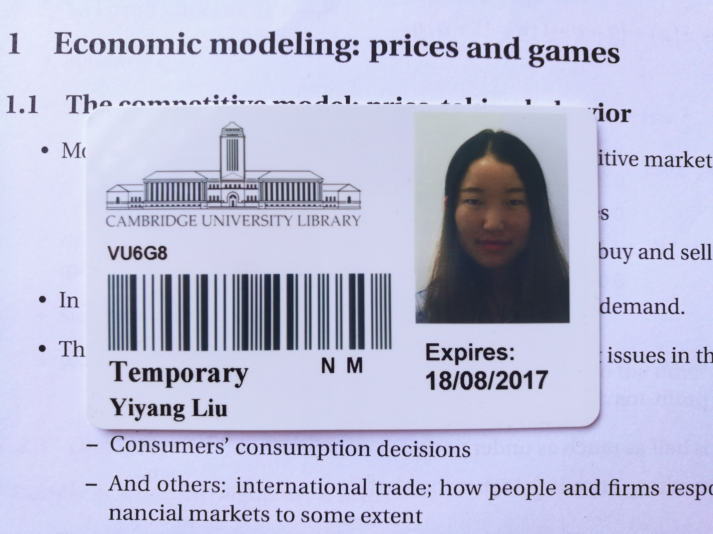

Hi, I am Yiyang Liu (Leah Liu)
Welcome to my website and learn more about me

About me
I am a first-year MS biostatistics graduate student at Columbia Mailman School of Public Health. The main courses includes Data Science, Biostatistics Method, SQL, Probability and etc. In June 2019, I graduated from Fudan University，one of the top three universities in China, with Bachelor of Science degree in Pharmacy. In the summer of 2017, I was an summer scholar at University of Cambridge, learning Business Communication, Organization of Multinational Corporations and other leadership courses.
I am interested in healthcare industry and I am looking for an internship in pharmacy, life science and other related co-operations.
My Experience
I was born in Shanghai, China, an international and diverse-cultural city that I loved very much. I leaved Shanghai a year ago to pursue my Master degree in Biostatistics in Mailman School of Public Health, Columbia University in the city of New York.
From 2015 to 2019, I studied pharmacy in Fudan University for my bachelor degree. In my sophomore year, I worked as a research assistant in Prof. Zhiqing Pang’s lab, focusing on biomimetic nanorods against breast cancer. A year later, I joined Prof. Leming Shi’s lab to help process data analysis in RNA-seq. Both professors were willing to write me recommendation letters when I was applying for Master programs.
Besides my research experience, I love to explore more things beyond my major. In the summer of 2017, I studied Business Communication, Organization of Multinational Corporations and other leadership courses in University of Cambridge as a summer scholar.
Life in Cambridge
From Sep to Dec 2017, out of the curiosity of operational models in a multinational pharmaceutical company, I attended the Roche University program (R U NEXT), in which led a 5-person team to give a presentation on reviewing and creating the approaches for pharmaceutical companies to pool patients and won Winner of Roche Pharmaceutical Ltd. R U Next Best Scheme Reward.

Our team
In addition to academic life I was a Minister of Information Department since my sophomore year. I recruited more than 20 students. We ran the Wechat platform, FDUpharmacy, and attracted more than 9500 subscribers. Due to my outstanding performance in both academic and student life, I won Outstanding Student of School of Pharmacy (top 5%) in my senior year.

Graduation with my best friends
Contact Information
- Cell phone: (+1)917-415-9357
- E-mail: yl4360@cumc.columbia.edu
- Address: 100 Haven Ave, Tower 2, Apt.10D, New York City, NY, 10032.